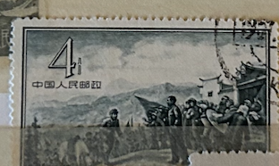
| SOURCE | TITLE| IMAGE MATCH | click to source page |
| eBay | PRC 1957 SC# 314 Mao & Chu Teh at Chingkanshan Issued without Gum Lot # 21 | eBay | 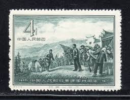 |
| eBay | RARE CHINA POSTAGE STAMP, 1957, SC# 314, Mao & Chu Teh at Chingkanshan, used | eBay | 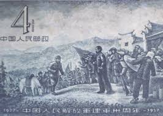 |
| The Conversation | Mao's China falsely claimed it had eradicated schistosomiasis – and it's still celebrating that 'success' in propaganda today | 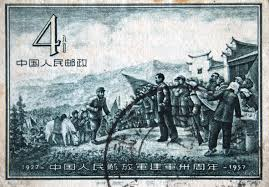 |
| China stamp | C41 Scott 313-316 30th Anniv. of Founding of PLA - China Stamps | 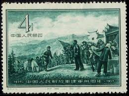 |
| Shutterstock | 372 immagini, foto stock e illustrazioni esenti da diritti d'autore a tema Maoismo | Shutterstock | 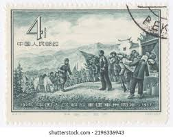 |
| eBay | People's Republic of China Scott #315 Used | eBay | 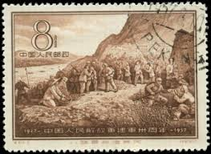 |
| chinesestamp.org | J179, 2200th Anniv. of Peasant Uprising Led by Chen Sheng and Wu Guang《 陈胜、吴广起义2200周年》 - Chinese Postage Stamps | China Postage Stamps | Chinese Stamp Album | China Philatel | ACPF | | 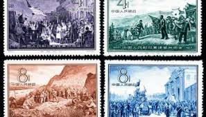 |
| Margipood | Shop - Page 116 of 278 - Margipood | 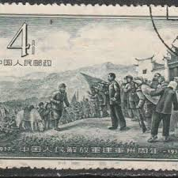 |
| eBay | China PRC Stamps Scott 313-316 1957 F/VF used full set A6255-794 | eBay | 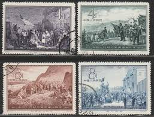 |
| Find Your Stamps Value | People's Liberation Army, 30th anniversary: Nanchang Uprising - 中国人民解放军建军五十周年: 南昌起义4f Black violet stamp price, value | 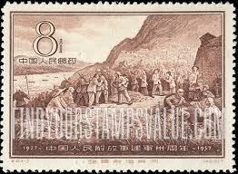 |
| Shutterstock | China Circa 1957 Stamp Printed China Stock Photo 96485768 | Shutterstock | 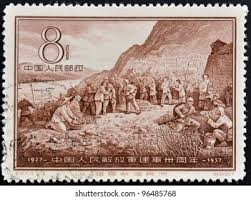 |
| eBay | China Stamps -中国邮票-中国人民解放军建军三十周年 -1957, C41, Scott 313-316 - NGAI, MNH, F-VF | eBay | 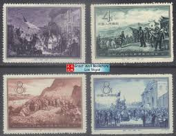 |
| eBay | 1951-1960 Year of Issue Postage Chinese Stamps for sale | eBay | 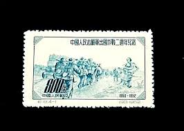 |
| eBay | CHINA SCOTT 375 STAMP CANCELLED | eBay | 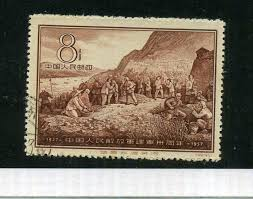 |
| Xabusiness.com | C74 Scott 487-489 25th Anniv. of Zunyi Meeting - China Stamps | 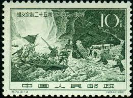 |
| eBay | China Sc 171, C19 (4-1), Mint, Block of 4, No Gum as Issued, Fresh, Very Fine | eBay | 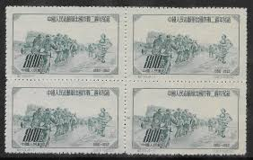 |
| PICRYL | Chinese New Army in 1910 - PICRYL - Public Domain Media Search Engine Public Domain Search | 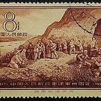 |
| Shutterstock | 55 Nanchang Uprising Royalty-Free Images, Stock Photos & Pictures | Shutterstock | 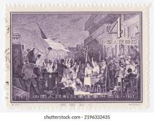 |
| eBay | China Sc 313/6, C41, incomplete set, Cancelled, Fresh Color, Very Fine | eBay | 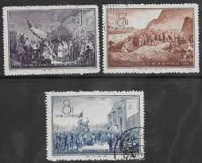 |
| eBay | PR China 1960 C74 25th Anniv. of Zunyi Meeting SC#487-489 used set | eBay | 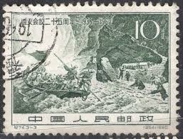 |
| The Itty Bitty Stamp Company | China PRC Scott # 316 Used – The Itty Bitty Stamp Company | 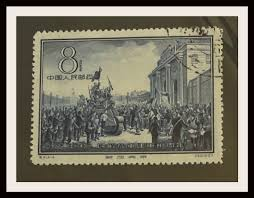 |
| Margipood | China - Page 4 of 44 - Margipood | 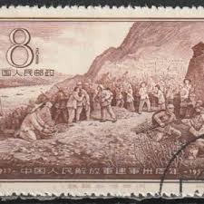 |
| eBay | 1951-1960 Year of Issue Postage Chinese Stamps for sale | eBay | 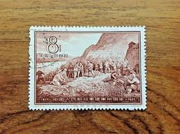 |
| Lazada Malaysia | Buy Stamp 1957 Online at a Better Price | Lazada Malaysia | 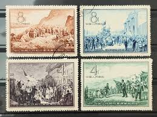 |
| eBay | China PRC Scott # 171 - MNH-NG | eBay | 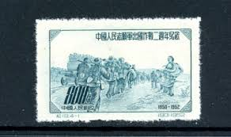 |
| Alamy | CHINA – CIRCA 2011: A stamps printed in China shows 2011-3 Early Leaders of the Communist Party of China (3) Xiang Ying , circa 2011 Stock Photo - Alamy | 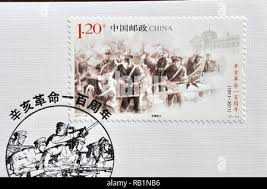 |
| eBay | unused China stamps S-171 C_19_1 China army in Korea 1952 800YUAN MNH 1pc | eBay | 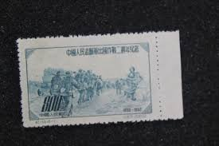 |
| Shutterstock | China Prc 1960 January 25 10库存照片2199245757 | Shutterstock | 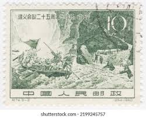 |
| eBay | China PRC J158 May Fourth Movement 70th anni Single Set 1989 MNH | eBay | 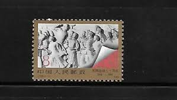 |
| Shutterstock | 20+ Thousand Postage Asia Royalty-Free Images, Stock Photos & Pictures | Shutterstock | 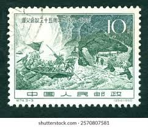 |
| Shutterstock | 6+ Hundred Resistance Postage Royalty-Free Images, Stock Photos & Pictures | Shutterstock | 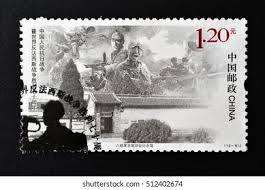 |
| eBay | G/VG (Good/Very Good) Chinese Stamps for sale | eBay | 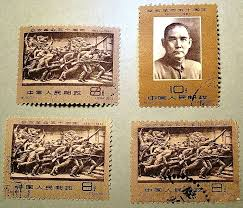 |
| Xabusiness.com | C115 Scott 859-862 20th Anniv. of Victory of Anti-Japanese War - China Stamps | 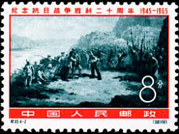 |
| Shutterstock | North Korea January 1 2012 Old Stock Photo 2606151781 | Shutterstock | 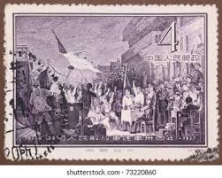 |
| eBay | China Civil War Nanchang Uprising stamp 1957 A-10 | eBay | 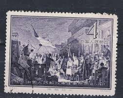 |
| Find Your Stamps Value | Prix du timbre People's Liberation Army, 30th anniversary: Liberation of Nanking - 中国人民解放军建军五十周年: 南京的解放8f Deep blue | 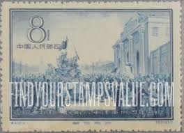 |
| HiBid | Stamps & Coins - Saturday Feb 21 @ 7pm US / Can Ship | HiBid Auctions | 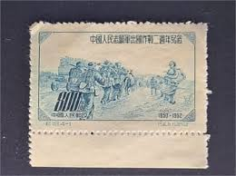 |
| Xabusiness.com | 2011-24 Centenary of Xinhai Revolution - China Stamps | 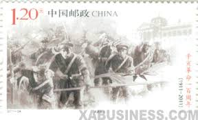 |
| eBay | China 1960 - Mint hinged stamp (MH). Mi nr.: 517.........(VG) MV-4257 | eBay | 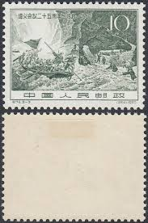 |
| eBay | PRC CHINA SCOTT # 600, 601 USED TIBETAN PEOPLE CTO | eBay | 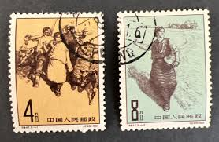 |
| HipStamp | China Stamp-1982-Sc#1821-22- 40th Anniv: Death of Indian DR. D.S..Kotnis MNH | Asia - China, General Issue Stamp / HipStamp | 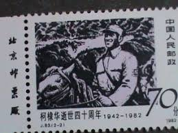 |
| Etsy | China Republic Stamp - Etsy | 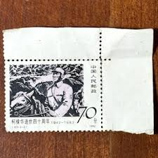 |
| eBay | 1965 C115 20th Anniversary of the Victory of the Anti Japanese War OG Top grade | eBay | 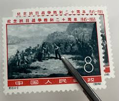 |
| HipStamp | China Stamp:-1951-Sc#124-7-Centenary of Taiping Peasant Rebellion -Mint Stamps- | Asia - China, General Issue Stamp / HipStamp | 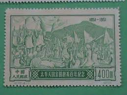 |
| Etsy | Buy Unposted Stamp - Dr. D.s.kotnis (1910-1942) China, People's Republic 1982 Online in India - Etsy | 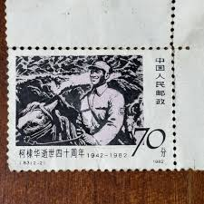 |
| HipStamp | China Stamp-1952-Sc#171-4- 2nd Anniversary of Chinese Volunteers in Korea-Mnh | Asia - China, General Issue Stamp / HipStamp | 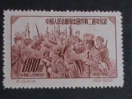 |
| HipStamp | China Stamp-1952- SC #155-7- WAR Against Japan 15th Anniversary Stamps-Mnh | Asia - China, General Issue Stamp / HipStamp | 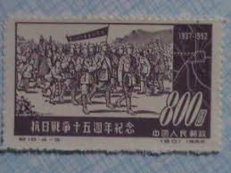 |
| China stamp | C19 Scott 171-174 2nd Anniv. of Chinese People's Volunteers in Korea - China Stamps | 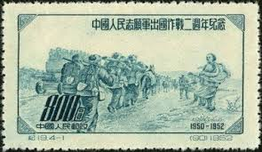 |
| eBay | PRC CHINA 1977 1322-24 T10 Frauen im Militärdienst Militär Military Women ** 2 | eBay | 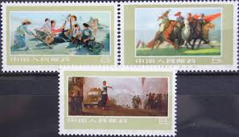 |
| eBay | China Stamp 1952. Land Reform, 4 Stamps. Mint 土地改革 | eBay | |
| Find Your Stamps Value | Millennium: Mao Zedong, Stamp #456 - 20世纪回顾: 开国大典: 毛泽东, 邮票#456 80f Multicolored stamp price, value | |
| Alamy | CHINA - CIRCA 1982: A stamps printed in China shows 40th Anniv. of Death of Dr. D. S. Kotnis Dr. D. S. Kotnis in China , circa 1982 Stock Photo - Alamy | |
| eBay | People's Republic Of China Postage Stamps | eBay | |
| chinesestamp.org | C016/JI16/纪16, 15th anniv. of War of Resistance against Japan《抗日战争十五周年纪念》 - Chinese Postage Stamps | China Postage Stamps | Chinese Stamp Album | China Philatel | ACPF | Stamps Catalogue of PRC | | |
| HipStamp | China Stamps: 1965 Sc#862 24th Anniversary: Victory Over Japan-Recruits in Cart- | Asia - China, General Issue Stamp / HipStamp | |
| iStock | Chinese Soldiers Under Fire In The Korean War 1952 Stock Photo - Download Image Now - 1950-1959, Aggression, Armed Forces - iStock | |
| eBay | China 860-861 PRC / 1965 Victory Over Japan Stamps / Used | eBay | |
| Alamy | 1957s hi-res stock photography and images - Alamy | |
| eBay | CHINA 1989 (J158) 70th ANNV. OF THE MAY MOVEMENT set of 1 Mint NH (US #2214) | eBay |